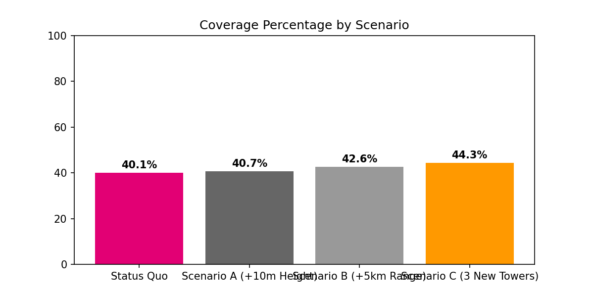
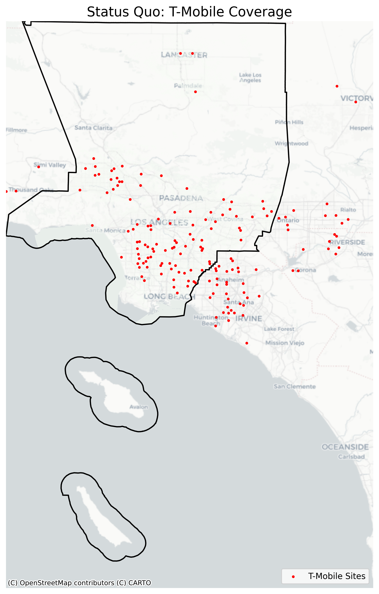

Unit 03: 가시권 분석 (Viewshed Analysis)
도구 숙련자 및 오퍼레이터 양성
ArcGIS 워크플로우는 래스터 데이터를 처리하기 위한 전용 유료 도구 상자인 Spatial Analyst 익스텐션을 활용합니다. 아래는 개념적인 작업 흐름입니다.
여러 장의 DEM(지형 고도 데이터) 타일을 하나의 거대한 지형 이미지로 합칩니다. 이때 각 파일의 좌표계(Spatial Reference)가 동일한지 일일이 확인해야 오류가 나지 않습니다.
가시권 분석 도구가 인식할 수 있도록 약속된 이름(하드코딩된 필드명)으로 데이터 표를 수정해야 합니다. 예를 들어 타워 높이는 무조건 OFFSETA 라는 이름의 기둥(Column)에 적혀 있어야 컴퓨터가 알아먹습니다.
도구를 실행하면 컴퓨터가 DEM 이미지의 수많은 픽셀을 스캔하며 타워와 픽셀 사이의 시야를 가리는 장애물이 있는지 수학적으로 검사합니다.
※ 지식창조자가 되기 위한 필수 관문: 도구 숙련도를 증명하기 위한 단계별 버튼 클릭 가이드 (계산기 매뉴얼 방식)
[Step 1] 지형 데이터 병합 (Mosaic To New Raster) Analysis 탭 ▶ Tools ▶ 검색: Mosaic To New Raster| Input Rasters | 다운로드한 DEM 타일 파일 모두 선택 |
|---|---|
| Output Location | 프로젝트의 기본 Geodatabase 폴더 선택 |
| Raster Dataset Name with Extension | LA_County_DEM 입력 |
| Spatial Reference for Raster | NAD 1983 UTM Zone 11N (프로젝트 좌표계와 일치) |
| Pixel Type | 16_BIT_SIGNED (또는 원본과 동일하게) |
| Number of Bands | 1 입력 |
→ 하단의 [Run] 버튼을 클릭하여 실행합니다.
[Step 2] 타워 속성 테이블 하드코딩 설정 Contents 창 ▶ T-Mobile 포인트 레이어 우클릭 ▶ Attribute Table 열기뷰쉐드 도구가 인식하는 약속된 매개변수 필드를 수동으로 생성해야 합니다.
테이블 상단의 [Add Field] 버튼을 눌러 다음 필드들을 생성합니다.
| OFFSETA (관측자 높이) | 타워의 높이 (Calculate Field를 통해 기존 타워 높이 데이터를 이 열로 복사) |
|---|---|
| OFFSETB (대상 물체 높이) | 사람이 핸드폰을 들고 있는 높이 (1.5 미터 일괄 입력) |
| RADIUS2 (최대 도달 반경) | 전파 최대 도달 거리 25km (미터 단위이므로 25000 일괄 입력) |
→ 리본 메뉴의 [Save]를 눌러 필드 구성을 저장합니다.
[Step 3] 가시권 분석 도구 실행 (Viewshed) Analysis 탭 ▶ Tools ▶ 검색: Viewshed (Spatial Analyst)| Input raster | LA_County_DEM (Step 1에서 만든 통합 지형 파일) |
|---|---|
| Input point or polyline observer features | T_Mobile_Towers (Step 2에서 수정한 타워 파일) |
| Output raster | Coverage_Result_Raster |
| Z factor | 1 (고도와 평면의 단위가 모두 미터(m)로 같을 경우) |
→ [Run] 버튼을 클릭합니다. 타워 개수와 해상도에 따라 수십 분~수 시간이 소요될 수 있습니다.
OFFSETA 라는 속성 필드 이름을 한 글자도 틀리지 않고 정확히 입력했는가?"지식 창조자 및 GIS 엔지니어 양성
파이썬 프로그래밍 방식은 고성능 래스터 처리를 위해 GDAL과 rasterio를 직접 다루며, 컴퓨터의 모든 두뇌(CPU 코어)를 동시에 사용하게 만드는 아키텍처 최적화에 집중합니다. 최종 PDF는 검증된 coverage_results.csv 값을 기준으로 다시 생성되어, HTML 차트와 PDF 표의 시나리오 수치가 일치합니다.
래스터(격자 이미지) 데이터를 읽고 쓰는 파이썬 도구 상자인 rasterio 라이브러리를 사용합니다. ArcGIS처럼 수동으로 도구를 실행해 파일을 저장하는 대신, 코드 안에서 rasterio.merge 라는 함수(명령어)를 호출하여 여러 장의 DEM 데이터 배열(Array)을 컴퓨터 메모리 위에서 즉시 동적으로 이어 붙입니다.
ArcGIS의 무거운 UI 창을 통하지 않고, 파이썬 코드에서 gdal 라이브러리 모듈을 불러온 뒤 ViewshedGenerate 라는 함수(가시권을 계산하는 핵심 로직)를 직접 실행합니다. 속성 테이블에 이름을 바꿔 적는 번거로운 짓을 할 필요가 없습니다. 코드에서 이 함수에 observer_height=30 (관측자 높이 30미터), target_height=1.5 처럼 매개변수(인자 값)를 명시적으로 던져주기만 하면 됩니다.
해상도가 매우 높은 DEM 지형 위에서 수백 개의 셀 타워를 한 번에 하나씩 검사하는 것은 엄청나게 느립니다. 파이썬에 내장된 concurrent.futures 모듈 안에서 ProcessPoolExecutor 라는 클래스(작업 반장 역할을 하는 객체 틀)를 불러옵니다. 이 작업 반장에게 지시하여, 거대한 계산 작업들을 여러 개의 뭉치로 쪼갠 뒤 컴퓨터에 있는 여러 개의 CPU 코어(예: 32개 코어)에 골고루 던져주어 "동시에" 계산하게 만듭니다.
※ 지식 창조자의 무기: "클릭" 대신 컴퓨터의 두뇌와 직접 소통하는 방법. 파이썬 문법을 몰라도, 회색으로 적힌 한글 해설을 읽어보며 코드가 어떻게 흐르는지 감을 잡아보세요!
[핵심 로직 0] 여러 장의 지형 래스터 데이터를 하나로 합치기 (모자이크)ArcGIS에서 마우스로 파일들을 하나씩 골라서 도구를 실행했던 그 작업을, 파이썬에서는 rasterio 라이브러리를 통해 동적으로 메모리 위에서 이어 붙입니다.
ArcGIS에서 45분 걸리는 작업을 단 몇 초 만에 끝내기 위해, 컴퓨터 내부의 강력한 지리 연산 엔진(GDAL)을 직접 조종하는 코드입니다.
파이썬의 진정한 마법입니다. 한 번에 하나씩 1시간 넘게 걸려서 계산하지 않고, 컴퓨터의 모든 두뇌를 동시에 깨워서 일하게 만듭니다.
계산이 모두 끝나면, 파이썬이 사람을 대신해 결과 지도와 표를 예쁘게 배치하여 PDF 보고서를 스스로 찍어냅니다. 이번 정리에서는 검증된 CSV를 다시 읽어 차트와 PDF 표가 같은 숫자를 쓰도록 고정했습니다.
병렬 처리 및 알고리즘 최적화 파이프라인 결과물
GDAL 엔진과 concurrent.futures를 활용한 고성능 가시권 계산 결과입니다.
30m 해상도 DEM을 사용하여 정밀도를 높였으며, 시나리오 분석을 통해 최적의 기지국 위치를 제안하는 고급 엔지니어링 리포트입니다.

T-Mobile Coverage Comparison Chart

Python-Generated Viewshed Map (Status Quo)